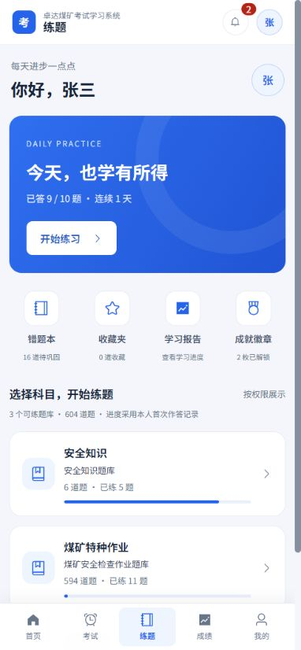
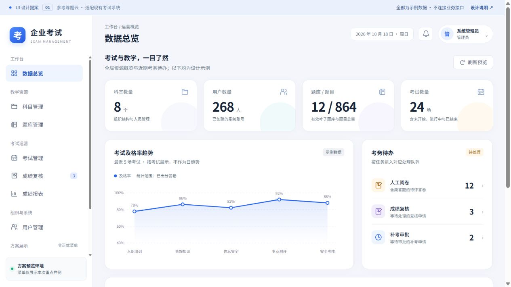
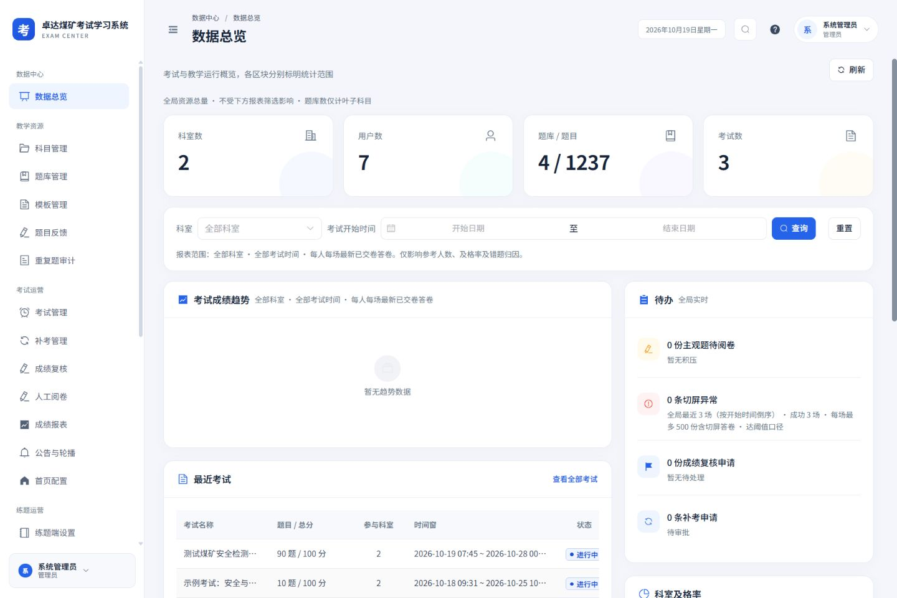

设计稿对照修正
2026-10-19 · 对照已确认的 UI 提案，修正实际程序中的结构差异。
上一轮完成了样式、适配和功能回归，但保留了旧版侧栏与练题首页布局，不能据此认定已经按稿还原。本次修正范围是全局框架与练题首页；以下图片均分别标明设计参考与实际程序。
练题首页：从旧布局改为稿中结构
- 问候区、蓝色每日一练卡、四个学习快捷入口、科目进度卡依次排列。
- 成就统计与全部徽章保留在“成就徽章”弹窗，避免占据首页主要空间。
- 题库列表改为可直接打开原有选题弹窗的卡片，保留目录层级、题库名与权限范围。
- 已练数量与进度来自实际报表接口；接口失败或报表关闭时省略进度，不采用设计示例中的数字。
- 手机端移除重复的练题二级导航，底部仍保留首页、考试、练题、成绩、我的五个入口。



全局框架：分区侧栏、标题、日期与账号区
管理端侧栏由旧版折叠菜单改为设计稿的分区标签与平铺入口，继续使用相同的菜单权限过滤函数。顶部新增面包屑、页面标题、当前日期和账号菜单；桌面正文避免重复显示同名标题。搜索、帮助、账号安全、原有菜单与侧栏收展功能保留。


验证结果
- 管理端 25 个入口，分别检查 320、768、1440 px，共 75 组布局；顶栏与主内容均无页面横向溢出。
- 练题首页检查 320、390、768、1440 px；四入口、题库卡片、原有选题弹窗、成就弹窗正常。
- 桌面侧栏可折叠到 64 px，手机点击当前菜单也能关闭导航抽屉。
- 58 个测试文件、440 项测试通过；类型检查与生产构建通过。
视觉结构核对与功能回归分别进行。页面检查记录见 checks.json；本轮未开始或提交真实考试，未修改角色权限。
截图中的账号、题量与统计来自验收时接口结果，后续以应用实际数据为准。日志位于 .build-verify/design-fidelity-*.log。